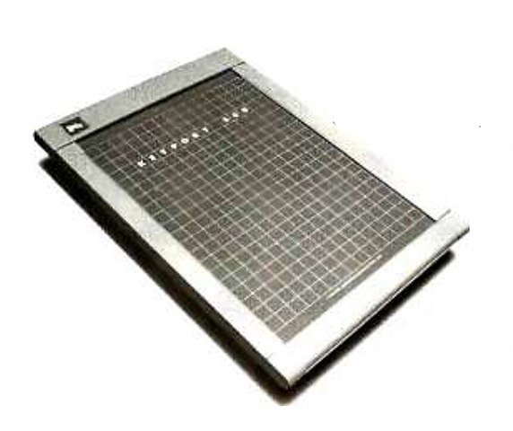

- 1984, Les frères Shérif et Adel Danish sortent la toute première tablette tactile "Keyport 300"
- 1986, une société française sort une tablette de 500g avec un RAM de 640 Ko et une pile en lithium
- 1987, une société américaine crée un ordinateur sans clavier, avec un stylet, elle pèse 4Kg.
- 1989, "GriDPad" est la première tablette tactile produite par Samsung. Elle coute 3 000$
- 1993, Première tablette apple "Apple Network"
- 2007, Windows 8 devient adaptable sur tablette
- 2012, Le premier Ipad est commercialisé